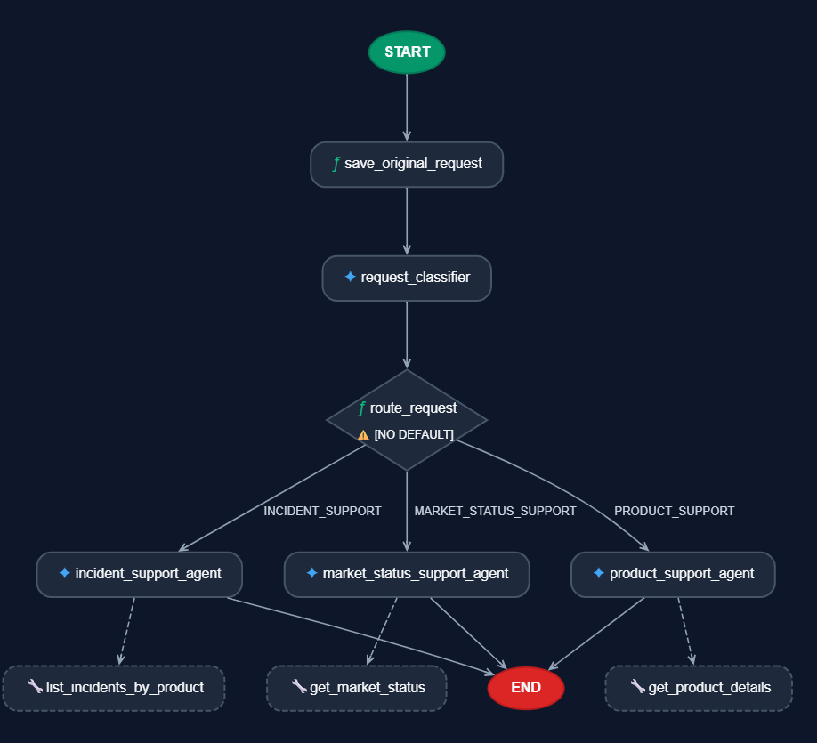
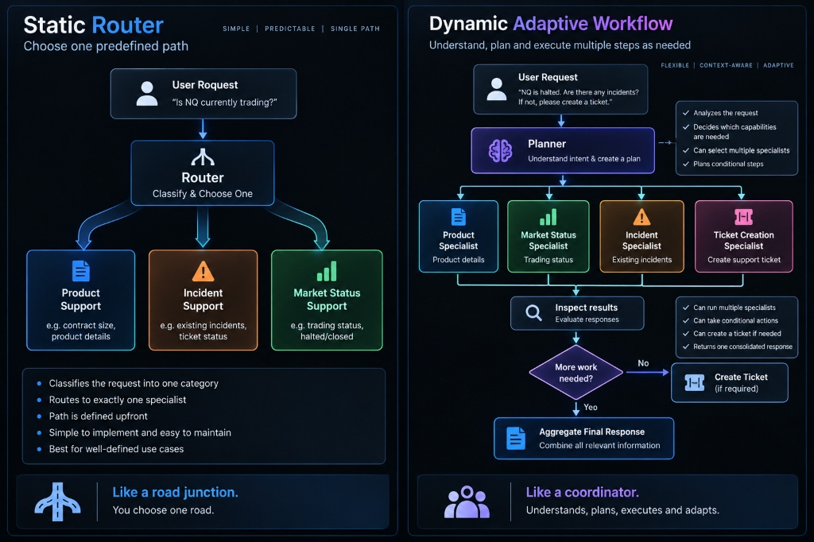
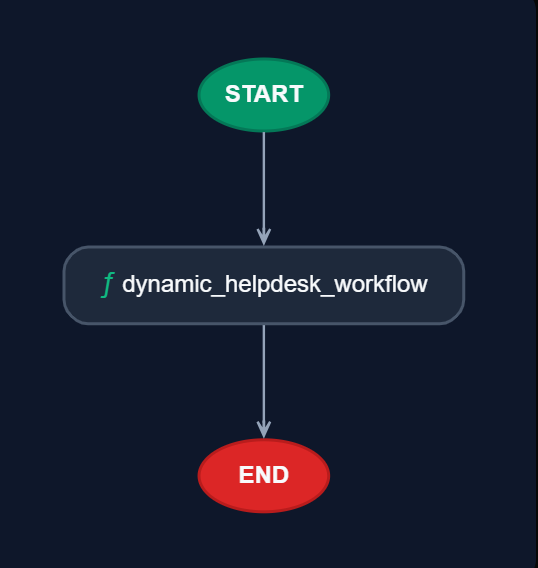
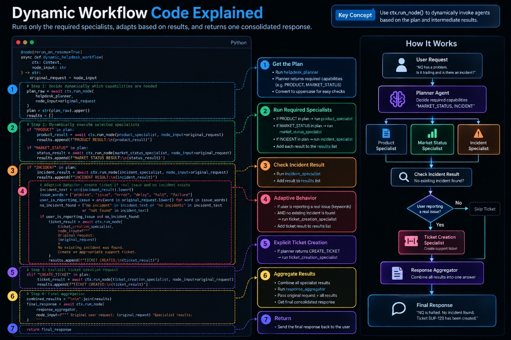
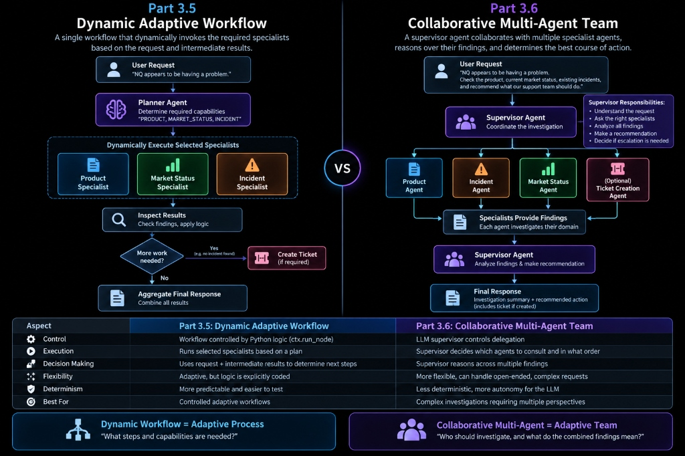
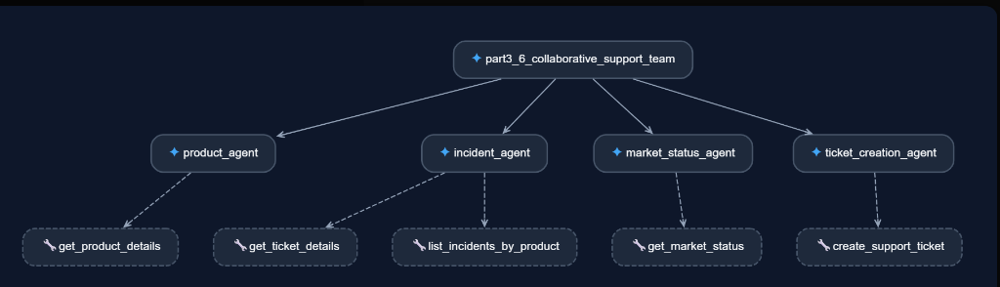
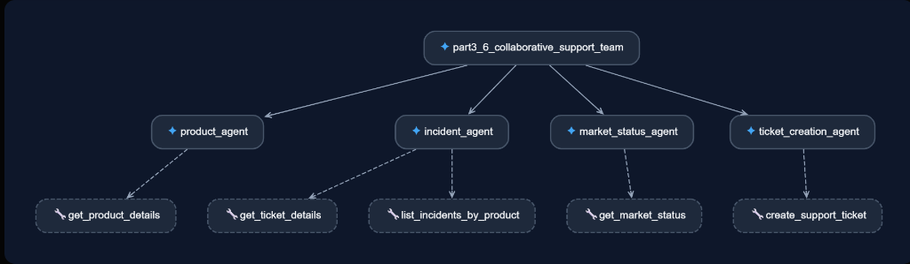

Lab 3: Multi-Agent Orchestration Patterns (ADK V2)
Master four core multi-agent design patterns using Google ADK V2 Graph Architecture (google.adk.Workflow) for the CME Internal Product Support Desk.
💡 CME Internal Product Support Desk Dataset
This lab models an internal employee assistant answering questions about products, support tickets, teams, and market operations:
• Products:
• Support Tickets:
• Support Teams: Market Data Support, Product Support, Platform Operations
• Statuses:
• Products:
ES (E-mini S&P 500), NQ (E-mini Nasdaq), CL (Crude Oil), GC (Gold)• Support Tickets:
INC-101 (Feed Delay), INC-102 (Trading Halt), INC-103 (Margin Discrepancy)• Support Teams: Market Data Support, Product Support, Platform Operations
• Statuses:
OPEN, INVESTIGATING, RESOLVED
Bash Terminal
# Navigate to lab directory and launch Google ADK Web UI
cd lab3_multi_agents
adk web --port 8000 .
PowerShell
# Navigate to lab directory and launch Google ADK Web UI
Set-Location lab3_multi_agents
adk web --port 8000 .-
Start ADK Web UI Server Run `adk web --port 8000 .` inside `lab3_multi_agents/` and verify `http://localhost:8000` opens.
Part 3.4: Graph / DAG State Agents (Route Support Request)
Conditional state-driven routing between specialized support teams.
🌿 Graph Node Routing
The Orchestrator evaluates support query context and branches to: Market Data Support (feed delays) OR Platform Operations (trading halts) OR Product Support (margin inquiries).

Prompt 1: Incident Support
Are there any reported incidents currently affecting NQ?
Prompt 2: Market Status Support
Is NQ currently trading, halted, or closed?
Prompt 3: Product Support
Tell me about the ES futures contract and its specifications-
Test part3_4_graph_agent with Prompts 1-3 Select `part3_4_graph_agent` and test conditional routing for Incident Support, Market Status, and Product Support prompts.
Part 3.5: Dynamic Adaptive Router (Help Desk Assistant)
Runtime intent classification and dynamic specialist dispatching.

🎯 Adaptive Help Desk Routing
Analyzes incoming employee query context at runtime and dynamically dispatches to specialized agents: Product Agent, Incident Agent, Market Status Agent, or Support Team Agent.


Prompt 1: Incident Agent
Are there any incidents for NQ?
Prompt 2: Market Status Agent
Is NQ halted?
Prompt 3: Product Agent
Tell me about GC.
Prompt 4: Multi-Agent (Market Status + Incident)
NQ looks halted and I want to know if there is already an incident.
Prompt 5: Dynamic Multi-Specialist Investigation
NQ has a problem. Check its market status and existing incidents-
Test part3_5_dynamic_agent with Prompts 1-5 Select `part3_5_dynamic_agent` and verify runtime intent routing across Incident, Market Status, Product, and Multi-Agent flows.
Part 3.6: Collaborative Peer Swarms (Investigate Issue)
Peer delegation and consensus collaboration across support team specialists.

🤝 Peer Consensus Swarm
Peer sub-agents (Product Agent + Incident Agent + Routing Agent) collaborate and hand off control to investigate service issues → Supervisor Agent produces final recommendation.

ADK Web UI Test Prompt
Something seems wrong with ES. Investigate and tell me what action we should take-
Test part3_6_collaborative_agent in Web UI Select `part3_6_collaborative_agent` and verify multi-agent collaboration across Product, Incident, and Market Status specialists for ES.
Part 3.7: Dynamic Adaptive Hybrid Workflow
Combined intent classification, single-specialist routing, parallel evidence gathering, supervisor reasoning, and adaptive ticket creation.
🔀 Hybrid Multi-Agent Architecture
Routes simple requests directly to single specialists, while multi-source issue investigations trigger parallel fan-out (Product + Market + Incident), join evidence, correlate findings via Supervisor, and adaptively create tickets when no incident exists.

Prompt 1: Simple Specialist Request
What are the product details and contract specifications for NQ
Prompt 2: Parallel Investigation & Escalation
Users are reporting problems with NQ. Investigate the product context, current market status and existing incidents, and recommend what we should do.-
Test part3_7_hybrid in Web UI Select `cme_intelligent_service_investigation` (`part3_7_hybrid`) and test simple routing (Prompt 1) vs parallel fan-out investigation with supervisor decision & ticket creation (Prompt 2).
Knowledge Assessment
Test your understanding of Google ADK V2 Multi-Agent Architecture for CME Support Operations.
1. In Google ADK V2 architecture, which class handles multi-agent orchestration for sequential, parallel, and graph routing?
2. How are Python tool functions equipped on ADK V2 Agent instances?
3. How does a dynamic router node run specialized sub-agents at runtime in ADK V2?
Completion Certificate
Congratulations on mastering Google ADK V2 Multi-Agent Graph Architecture!